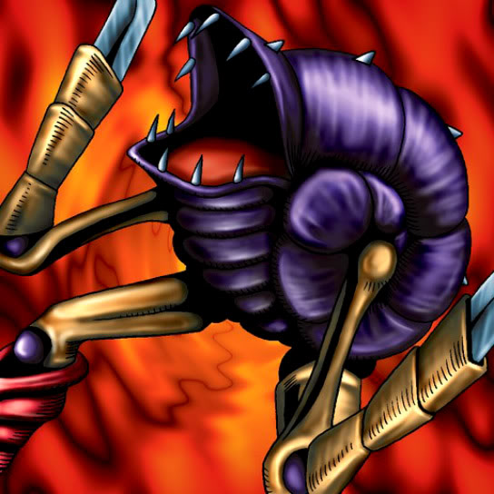

Mechanical Snail

STATS
ATK: 800
DEF: 1000DECK COST
Deck Cost per Card: 18Fusion List (18 Possible Fusions)
- Mechanical Snail + Anthrosaurus = Cyber Saurus
- Mechanical Snail + Armaill = Cyber Soldier
- Mechanical Snail + Dark Gray = Dice Armadillo
- Mechanical Snail + Hane-Hane = Dice Armadillo
- Mechanical Snail + Koumori Dragon = Metal Dragon
- Mechanical Snail + M-Warrior #2 = Cyber Soldier
- Mechanical Snail + Milus Radiant = Giga-tech Wolf
- Mechanical Snail + Misairuzame = Metal Fish
- Mechanical Snail + Monster Egg = Cyber Soldier
- Mechanical Snail + Mystical Sheep #1 = Giga-tech Wolf
- Mechanical Snail + Mystical Sheep #2 = Giga-tech Wolf
- Mechanical Snail + Queen's Double = Cyber Soldier
- Mechanical Snail + Petit Dragon = Metal Dragon
- Mechanical Snail + Thunder Dragon = Metal Dragon
- Mechanical Snail + Two-Mouth Darkruler = Cyber Saurus
- Mechanical Snail + Vishwar Randi = Cyber Soldier
- Mechanical Snail + Wood Clown = Cyber Soldier
- Mechanical Snail + Yamatano Dragon Scroll = Metal Dragon